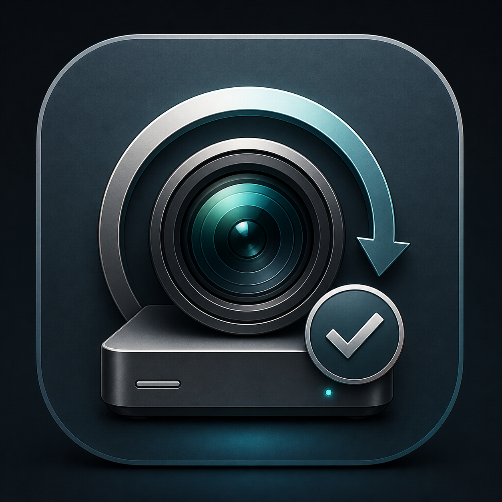
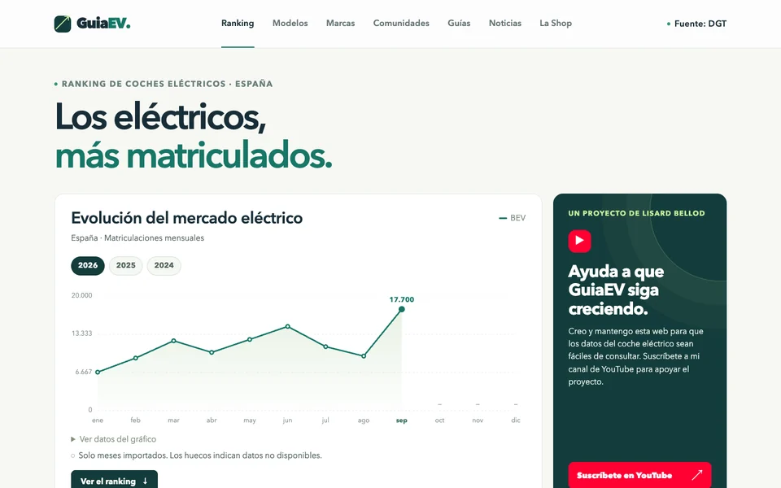
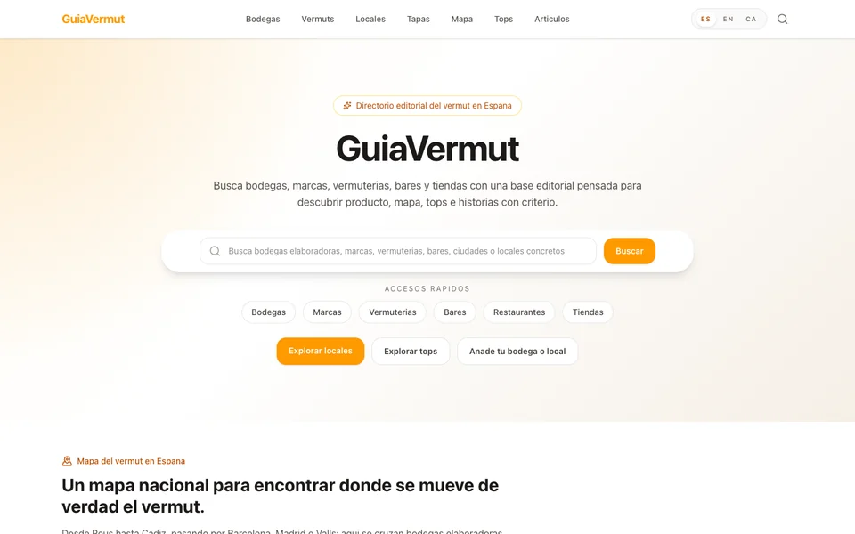
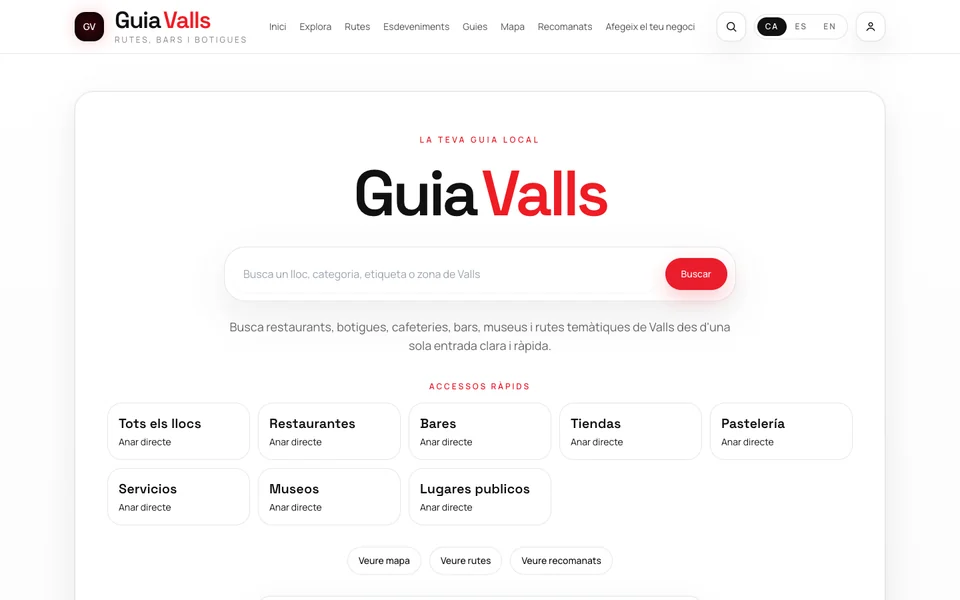
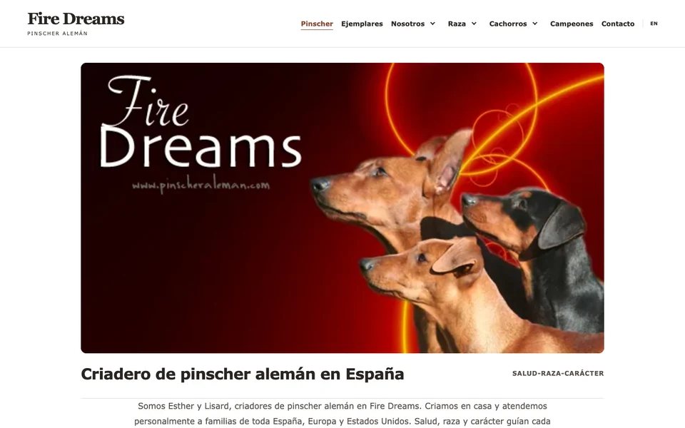
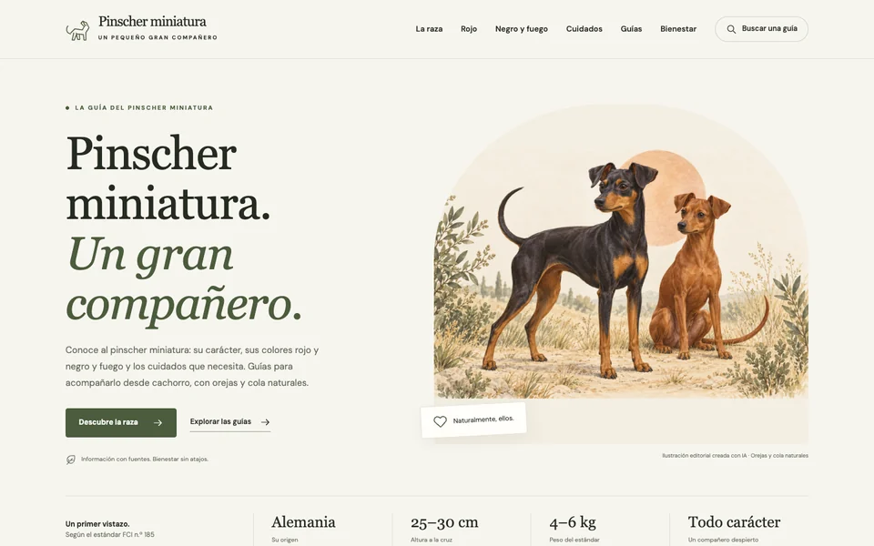
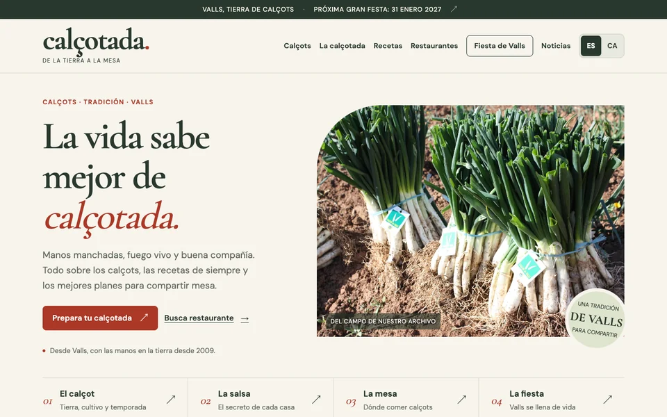
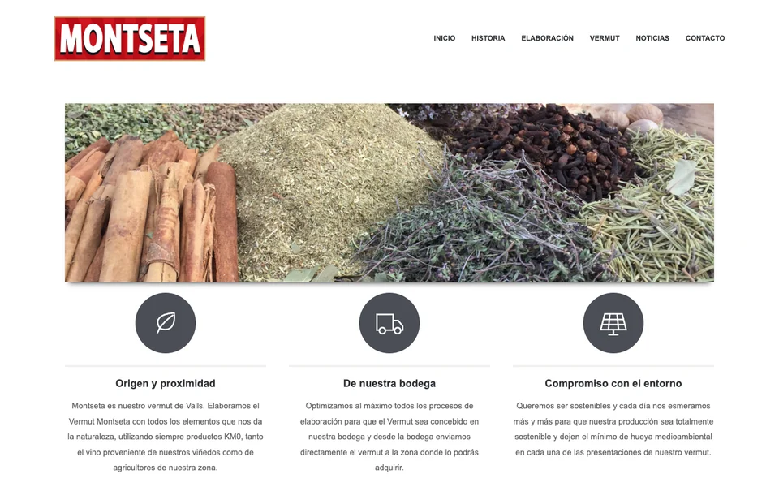

App para Mac
06

Cam to HD
Archivado de vídeos de cámara a disco sin duplicados innecesarios.
Desarrollado por Lisard
Descarga directa para macOS.
Proyectos
Mis webs, negocios reales y herramientas nacidas de la experiencia. Todo conectado con lo que ves en el contenido.
En la red
Motor, gastronomía, territorio y perros. Mis proyectos en la red.

Matriculaciones y rankings de coches eléctricos en España.

Bodegas, marcas y lugares para disfrutar del vermut.

Rutas, restaurantes y comercios para descubrir Valls.

Fire Dreams: nuestros perros y la cría en familia.

La raza, su carácter y sus cuidados cotidianos.

Calçots, recetas y restaurantes para compartir una calçotada.

Nuestro vermut de Valls y su historia familiar.
Negocio real
Negocio físico
01
Un punto de encuentro donde el producto, la experiencia y la comunidad se convierten en marca.
Experiencia que fideliza.
Ecommerce
02
Venta online con identidad propia y foco en conversión.
Tráfico que se convierte en ventas.
Producto
03
Origen, calidad y diferenciación en un mercado saturado.
Producto con identidad.
Herramientas
Herramienta
04
Entiende de verdad cuánto ahorras con un eléctrico.
Datos > opiniones.
Herramienta
05
Calcula el coste real antes de tomar una decisión.
Decidir con números.
App para Mac
06

Archivado de vídeos de cámara a disco sin duplicados innecesarios.
Desarrollado por Lisard
Descarga directa para macOS.
Otros
Proyecto personal
07
Disciplina, detalle y pasión llevados a otro nivel.
Constancia que construye.